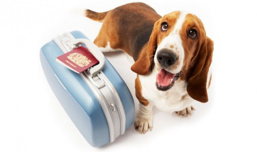
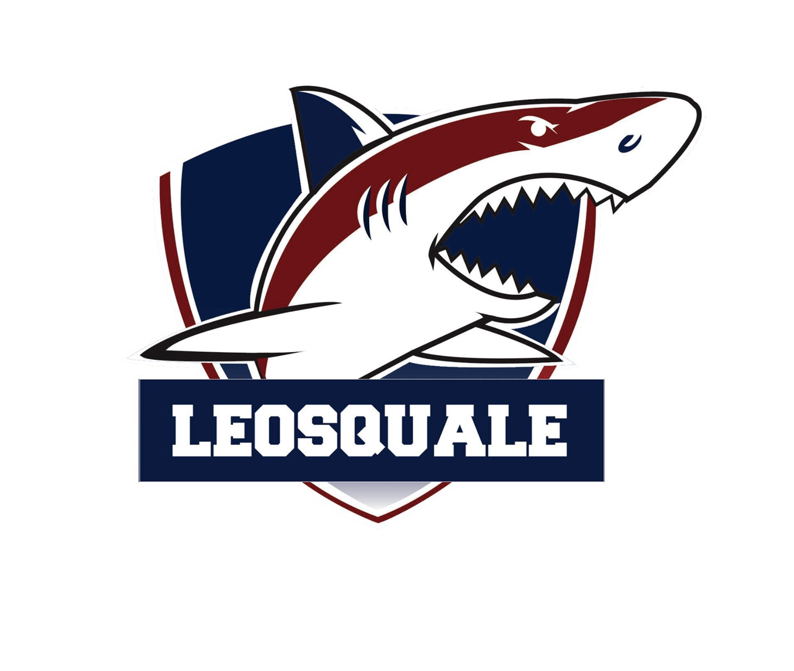
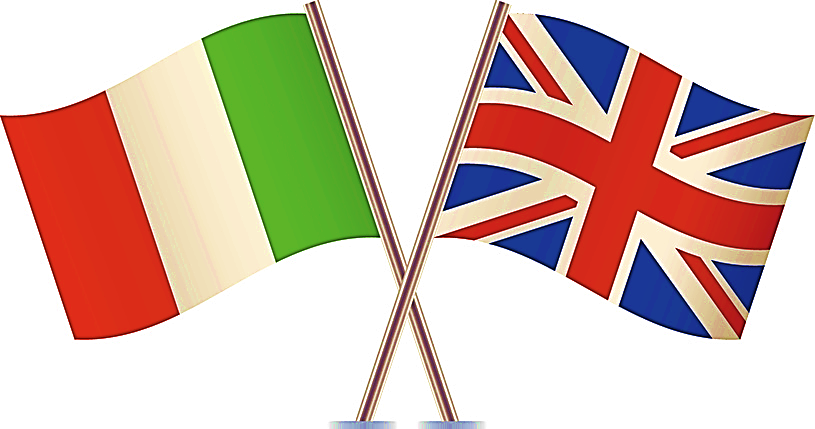

Je suis actuellement étudiante en 1ère année à l'école de management Léonard Devinci (EMLV). Anciennement en école d'ingénieur, j'avais appris à coder en C#, malheureusement les explications n'étaient pas claires et je n'appréciais pas ces cours... Mais grâce au site "Le Wagon" j'ai pu apprendre, et maintenant j'adore ça !!
Découvrez Le WagonJe m'appelle Camille Madeleine Dauchez, je suis née le 05/05/2001. J'ai donc 20 ans et je suis française-algérienne. J'ai un petit frère ainsi que plusieurs animaux !! J'ai fait une terminale S et eu le bac avec mention. J'ai ensuite étudié pendant un an et demi en école d'ingénieur à l'ESILV avant de me reconvertir en intégrant l'EMLV.
J'aime beaucoup le sport et en particulier la natation. Je me passionne pour les animaux et les voyages à travers le monde entourée de mes amis.
Je suis membre de Léosquad, c'est l'association de natation du pôle Léonard de Vinci !
Je parle courrament 3 langues : le Français, l'Anglais et l'Italien. Effectivement, j'ai obtenu mon "Esame di Stato" (BAC italien) à la suite d'une formation double-diplôme lors de mes années de lycée.
